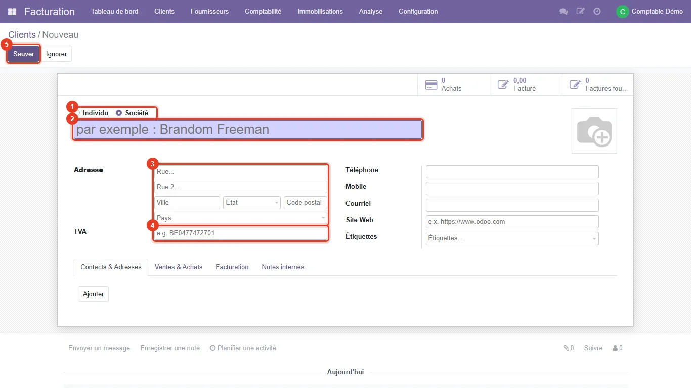

Objectif. Créer une fiche client juste, avec son NIU, sans doublon.
Où dans Odoo 15Facturation › Clients › Clients › Créer

Ce que vous faites
- Recherchez d'abord le client : il existe peut-être déjà.
- Cliquez sur Créer, choisissez Société (1) et saisissez la raison sociale (2).
- Adresse (3), puis le NIU dans le champ TVA (4).
- Sauvegardez (5).
À vérifier avant de continuer
0 / 2À éviter.
- Ne créez pas un nouveau client pour une nouvelle adresse : ajoutez un contact.
Exercice sur la base de test
Créez le client Société Exemple SARL avec son NIU et une adresse à Douala.